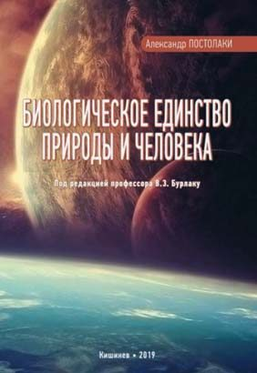
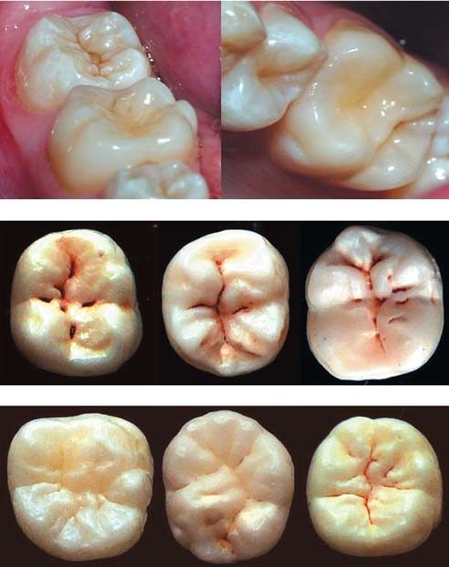
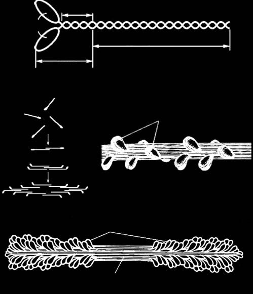
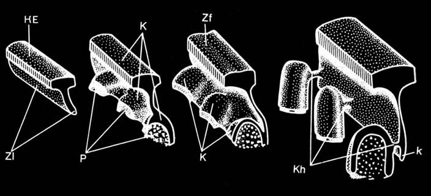
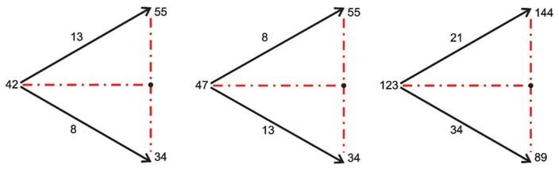
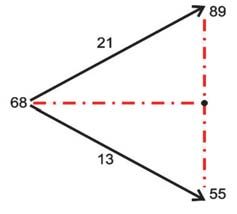
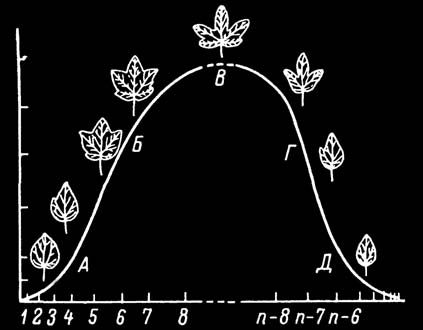

Наука · журнал «ДентАрт» 2020 №2
Біоморфологічні закони і закономірності в розвитку і будові зубощелепно-лицьової системи людини. Частина I
Biomorphological Laws and Regularities in the Development and Structure of the Dento-Maxillofacial System of Human. Part I
Морфофізіологічна полярність клітин і принципи дихотомічного росту
Вивчення проблеми виникнення життя на Землі та чинників, які вплинули на еволюційний розвиток і різноманіття складних форм, серед них і людини, — одне з важливих завдань сучасної науки, зокрема антропології.1-6 Однак залишаються ще недостатньо вивченими деякі питання філо- та онтогенезу зубощелепно-лицьової системи (ЗЩЛС) людини. З 2009 року в журналі «ДентАрт» протягом кількох років послідовно публікувалася ціла серія статей автора, які лягли в основу міждисциплінарної монографії (фото 1). Розглянемо деякі результати дослідження у цій статті.
Ми виявили дивовижну схожість в описі особливостей механізму формування і росту апекса рослин і твердих зубних тканин — емалевих призм (похідне епітелію) та дентину (похідне сполучної тканини). Полярністю називають відмінність між протилежними точками (полюсами) організму, органу або окремої клітини, яка проявляється і в фізіологічних функціях, наприклад, в утворенні, пересуванні і накопиченні різних речовин. Ці особливості настільки глибоко закладені у спадковій природі організму, що не змінюються навіть при зміні навколишніх умов.7
Так, у період ембріонального розвитку зубів поряд з надходженням мінеральних та інших речовин в енамелобласти (адамантобласти) з боку судин зубного мішечка на початку амелогенезу спостерігається зміна морфологічної і фізіологічної полярності цих клітин. До початку амелогенезу базальні кінці енамелобластів, в яких містилися ядра, були звернені до зубного сосочка, а їх вершини з апаратом Гольджі — до пульпи емалевого органу. Як вказує Л. І. Фалін,8 сутність цього цікавого явища, описаного Г. І. Ясвоїним та іншими авторами наприкінці 20-х — на початку 30-х рр. ХХ століття, полягає в тому, що як тільки енамелобласти розпочинають утворювати емаль, у кожній клітині апарат Гольджі починає переміщуватися від зовнішнього полюса до основи — у бік дентину, в той час як ядро з внутрішнього відділу клітини рухається у протилежному напрямку. Прийнято вважати, що зміна полярності цих клітин пов'язана з відкладенням на вершині зубного сосочка шару дентину, який немовби відрізає енамелобласти від їхнього колишнього джерела живлення, яким були кровоносні судини зубного сосочка (Орбан, 1953).8,9
У природі найбільшої складності полярність досягає у вищих рослин, вона проявляється в будові і роботі окремих тканин і клітин, у здатності до регенерації втрачених частин, але типовий поділ на основу і верхівку спостерігається вже у водоростей. Важливо зазначити, що синтезовані у верхівці пагона ауксини перетікають провідними шляхами в тканинах до основи, збуджуючи діяльність камбію (аналог емалево-дентинного з'єднання в зубах), і, накопичуючись у певних місцях, вони здатні викликати утворення коренів.7 Не виключено, що подібний механізм має місце і в розвитку коренів зубів людини.
Таким чином, більш поглиблене вивчення загальних еволюційних принципів розвитку та функціонування рослин і зубів7-9,11 здатне наблизити нас до відповідей на багато питань ембріо-морфогенезу тканин і органів ЗЩЛС і людини в цілому.
Вивчення механізмів формоутворення і законів мінливості будови зубів — одне з фундаментальних завдань антропологічної одонтології. Встановлено, що кожен клас зубів має свою власну структуру, відповідну виконуваній функції, а будь-який зуб є ланкою єдиного безперервного морфологічного ланцюга форм. Відмінність лише в ступені диференціації зачатка у процесі росту, що генетично запрограмовано, хоча деталі архітектоніки схильні до індивідуальної мінливості. Наводяться докази існування єдиної стандартної схеми повторюваних візерунків, які формують оклюзійний рельєф.12 Це означає, що принципи формоутворення можуть бути віднесені і до загальної фрактальної системи розвитку організму від мікро- до макрорівня. Так, А. А. Молдавська і співавт. (2004) встановили, що «закладки нижніх кінцівок у зародків людини з'являються на 3-му тижні внутрішньоутробного життя у вигляді парних лопатевих виростів тулуба на рівні останніх поперекових склеротомів. Ця закладка відповідає дистальному відділу нижньої кінцівки — стопі». І далі: «у зародка 21 мм визначається закладка стопи, що складається з 3-х хрящових „кісточок"»13 (рис. 1, 2).
Еволюційна редукція структурних елементів бічних зубів (центральних і бічних емалевих валиків жувальних горбиків) веде до спрощення рельєфу, зникнення емалевих затікань і злиття дрібних фісур у глибші й довші.
Принцип дихотомії вбачається як у будові тіла людини, так і в розвитку ЗЩЛС, особливо лобового відростка та 1-ї (мандибулярної) вісцеральної дуги на 6-8-му тижні ембріогенезу. Той же загальний принцип будови простежується у розвитку зубної пластинки, емалевих призм, Томсових волокон (відростки одонтобластів), кровоносних судин, нервів, рецепторів у пульпі та періодонті (рис. 3).

![Тричленна диференціація як універсальна модульна біотехнологія. Схема формування лицьового скелета за Ю. Ф. Ісаковим — (а); апікальна меристема рослини з характерними горбиками росту на вершині (схема) — (б); квітка гарбуза звичайного, що формується, з центральним і бічними зубцями — (в); характерне дихотомічне галуження фісур на молярах — (г); центральні (1 а, б) і бічні (2 а, б) емалеві валики жувальних горбиків точно повторюють форму першої вісцеральної (мандибулярної) дуги і лобного відростка при формуванні лицьового скелета, а також повністю збігаються за формою з апікальною меристемою рослини. Фісури утворюють дихотомічний малюнок. Ілюстрацію склав О. І. Постолакі.](images/post-003.jpg)

![Дихотомія — найдавніший тип філотаксисного росту в природі. Д. принцип (а) простежується в розвитку зубної пластинки, емалевих призм, черепних кісток (б), Томсових волокон (відростки одонтобластів) — (в), кровоносних судин, нервів, рецепторів у пульпі і періодонті, в узорах фісур зубів (г), в ембріональному розвитку голови і ЗЩЛС: 1) перша (мандибулярна) вісцеральна дуга; 2) лобовий відросток; 3) мандибулярний відросток; 4) верхньощелепний відросток; 5) піднебінні відростки; 6) носовий відросток; 7) носова перегородка; 8) бічні відростки язика; 9) друга (гіоїдна) вісцеральна дуга — утворює під'язикову кістку; 10-12 рудименти справжніх зябрових дуг (1-а, 2-а, 3-я) — джерело мезенхіми для розвитку органів шиї — глотка, хрящі гортані, її м'язи та ін. — (д). (Схема за О. Постолакі).](images/post-005.jpg)

Філотаксисна теорія та біоматематичний аналіз ембріо-морфогенезу зубощелепно-лицьової системи
У 1954 році А. Фрай-Вісслінг звернув увагу на деякі цікаві закономірності в будові біологічних молекул, подібні до філотаксису рослин. За його даними, розташування амінокислотних залишків у спіралях поліпептидів (білків) визначається відношенням чисел 11/3, 18/5, 29/8, 47/13 для різних молекулярних ланцюгів. Ці відношення і задають «ідеальні» кути розходження амінокислотних залишків, подібно до кутів розходження листя рослин, що створює можливість таким шляхом ефективніше заповнити простір.
На думку А. Фрай-Вісслінга, зазначені відношення чисел утворюють закономірний ряд, в якому знаменники утворені числами Фібоначчі, а чисельники — похідним рядом Люка (1, 3, 4, 7, 11, 18, 29, 47, 76, 123, 199, 322, …).1,4,5 Значення чисел Фібоначчі описано у співвідношеннях кісткових сегментів кисті та геометрії стопи людини.14,15 Закономірності філотаксису виявляються у будові міофібрил.
Міозинові філаменти міофібрил складаються зі стрижня і глобулярної головки на його кінці. Послідовні головки зміщені по спіралі, виток якої дорівнює близько 400 Е (40 нм), і розташовані одна відносно одної на 120° (рис. 4). Із цього випливає, що розташування головок міозину відносно одна одної відбувається за формулою філотаксису 1/3, що і пояснює кут розходження 120°.
Системний аналіз загальноприйнятих у науковому світі положень про періоди закладки і розвитку тканин і органів голови й лицьового черепа ембріона людини ліг в основу власного дослідження з позиції теорії філотаксису і дихотомічного галуження як одного з найдавніших механізмів росту.7-17
Вважається, що церебральна і вісцеральна частини черепа у ранніх ембріонів людини не мають достатньо чітких меж. Вісцелярна частина скелета голови формується зі скорочених і дуже змінених залишків структур зябрових дуг. Для візуального відображення основних етапів формоутворення ми використали метод геометричної побудови на площині і фізичного об'ємного моделювання об'єкта з пластичної маси (пластилін).
Результати дослідження засвідчили, що при формуванні лицьового скелета і первинної ротової порожнини — передні парні виступи — перша (мандибулярна) вісцеральна дуга — умовно позначимо як відростки I-го порядку, наростаючи в медіальному напрямку, розщеплюються на краніальні і хвостові частини, даючи початок відповідно парним верхньощелепним (максилярним) — II-го А порядку і нижньощелепним (мандибулярним) відросткам — (II-го Б порядку). На 6-8 тижні ембріогенезу на відростках II-го А порядку утворюються піднебінні відростки (III-го порядку), спрямовані всередину ротової порожнини. Між відростками II-го А порядку розташовується непарний лобовий відросток I-го порядку, що дає початок медіальним і латеральним носовим відросткам (II-го порядку), які одночасно є стінками парних нюхових ямок. Заглиблюючись, вони протикають верхню стінку первинної ротової порожнини, утворюючи в ній отвори, що відповідають майбутнім хоанам. Так відбувається закладка носових ходів і їх з'єднань з носоглоткою. Від даху порожнини носа до піднебінних відростків III-го порядку згори вниз росте носова перегородка, розділяючи порожнину носа на дві половини.
Від медіальних відростків II-го порядку продовжують рости відростки III-го порядку, що утворюють середню частину верхньої щелепи, в якій сформуються різці. Наростаючи наперед, верхньощелепні і носові відростки II-го порядку зливаються між собою, утворюючи закладку верхньої щелепи і верхньої губи. На 10-му тижні відбувається зрощення піднебінних відростків (III-го порядку) і частково медіальних відростків II-го порядку, ведучи до формування твердого піднебіння.
Парні відростки II-го Б порядку не дають додаткових відростків, на відміну від верхньощелепних (II-го А порядку), які є найдавнішими утвореннями, включаючи, мабуть, і лобовий, а зростаються, утворюючи закладку нижньої щелепи та нижньої губи.
На внутрішній поверхні відростків I-го порядку — першої (мандибулярної) дуги — утворюються бічні язичні горбики, які, зливаючись, дають початок більшій частині тіла язика і його кінчику. Друга вісцеральна дуга (гіоїдна) — парні утворення — ростуть у медіальному напрямку і зливаються, формуючи під'язичну кістку.8-10,18,19 Таким чином, перша (мандибулярна) вісцеральна дуга формується за законами філотаксису шляхом дихотомічного галуження, підтверджуючи положення про неї як про найдавніше утворення в період ембріогенезу людини.
У розвитку зубів розрізняють три стадії, або періоди, які нерідко відмежовані одна від одної: 1) закладка і утворення зубних зачатків; 2) диференціювання зубних зачатків; 3) гістогенез зубних тканин. Відомо, що перші ознаки початку розвитку зубів людини стають помітними на 6-7-му тижні ембріонального життя. Багатошаровий плоский епітелій утворює вздовж верхнього та нижнього краю первинної ротової щілини потовщення, яке в результаті поступового вростання вглиб підлеглої мезенхіми утворює епітеліальну пластинку, яка розділяється потім на дві: передню, або щічно-губну, і розташовану до неї під прямим кутом зубну пластинку. Обидві ці пластинки виникають самостійно, незалежно одна від одної, у бічних відділах ротової порожнини безпосередньо з її епітелію. Далі вздовж щічно-губної поверхні зубних пластинок верхньої і нижньої щелеп утворюються розростання епітелію у формі колбоподібних випинань (кількістю 10), які в подальшому перетворюються на емалеві органи молочних зубів.8,9
Джерелом утворення постійних зубів є та сама зубна пластинка, з якої розвиваються зачатки молочних зубів. Починаючи з 5-го місяця ембріонального життя, тобто приблизно після 120-го дня, уздовж нижнього краю зубної пластинки, позаду кожного зачатка молочного зуба, але вже на язичному боці, утворюються емалеві органи постійних передніх зубів (різців, іклів і малих корінних). Одночасно з цим зубна пластинка продовжує рости в кожній щелепі назад, і по її краю утворюються емалеві органи великих корінних зубів. Найраніше, на 5-му місяці ембріонального життя, з'являється зачаток 1-го великого корінного зуба. Закладка інших молярів відбувається значно пізніше. Так, зачаток 2-го великого корінного зуба з'являється до середини першого року життя дитини, а зачаток 3-го моляра, зуба мудрості, — на 4-му і навіть 5-му році життя. За припущенням Л. І. Фаліна (1963), В. В. Гемонова і співавт. (2002), така пізня їх поява пов'язана з необхідністю попереднього росту і видовження щелеп плода, оскільки для них немає місця. Лише після закінчення утворення емалевих органів усіх постійних зубів зубна пластинка атрофується і розсмоктується.
Сам розвиток постійних зубів відбувається аналогічно, як і молочних, різниця полягає лише в часі проходження окремих стадій і в більшій тривалості розвитку, особливо великих корінних зубів. Л. І. Фалін, як і багато вчених, також стверджував, що з ембріональної точки зору постійні зуби є заміщувальними і належать не до другої генерації зубів, а до першої, тобто до молочного ряду зубів, оскільки вони виникають безпосередньо від зубної пластинки і не мають попередників.8,9
На підтвердження цього подаються відомості Мейєра (1951) про те, що «зубна пластинка, утворивши емалеві органи великих корінних зубів, дає початок новим епітеліальним потовщенням, які дуже схожі на зачатки емалевих органів постійних зубів. Щоправда, вони мають рудиментарний характер і не розвиваються далі, однак сам факт їх появи при розвитку корінних зубів свідчить про приналежність останніх до молочного ряду»цит. за 8 (рис. 6).
Слід звернути увагу на те, що перші ознаки стають помітні на 6-7-му тижні, тобто починаючи з 36 дня (початок 6-го тижня) по 49 день (кінець 7-го тижня). Очевидно, що період 6-7 тижнів є усередненим показником при незначних індивідуальних відхиленнях, які є варіантом норми. Цей часовий проміжок повністю відповідає числовій послідовності Фібоначчі — 34-55, тобто утворення зубних зачатків відбувається між 34-55-им днем ембріонального життя.8,9
У той же час ми вирішили вивчити питання, яке поставили перед собою: який взаємозв'язок, крім біологічного, існує між процесами утворення молочних і постійних зубів і в якому математичному співвідношенні?
Отже, нам уже відомо, що перші ознаки розвитку молочних зубів стають помітні в проміжку між 36-им і 49-им днем, а постійних — приблизно зі 120-го дня ембріонального життя. Аналіз математичних розрахунків засвідчив, що терміни утворення молочних і перших постійних зубів перебувають у співвідношенні, близькому до «золотої пропорції». Виходячи з цього, «ідеальними» співвідношеннями між молочними й постійними зубами будуть, наприклад, 46/120 дні ембріонального життя або близькі до них співвідношення, де різниця становитиме 74-75 днів:
- 46 : 120 = 0,3833333, √0,3833333 = 0,619139 ≈ 0,618 / 120 : 46 = 2,6086956, √2,6086956 = 1,6151456 ≈ 1,618, — різниця 74 дні;
- 46 : 121 = 0,3801652, √0,3801652 = 0,6165753 ≈ 0,618 / 121 : 46 = 2,6304347, √2,6304347 = 1,6218614 ≈ 1,618, — різниця 75 днів;
- 47 : 121 = 0,3884297, √0,3884297 = 0,6232412 ≈ 0,618 / 121 : 47 = 2,574468, √2,574468 = 1,6045148 ≈ 1,618, — різниця 74 дні;
- 48 : 122 = 0,3934426, √0,3934426 = 0,62725 ≈ 0,618 / 122 : 48 = 2,5416666, √2,5416666 = 1,5942605 ≈ 1,618, — різниця 74 дні.
На 10-му тижні ембріонального життя в кожен емалевий орган починає вростати мезенхіма, завдяки чому він стає схожим на дзвін або чашу. Початок 10-го тижня випадає на 64-й день, тобто на період числової послідовності Фібоначчі 55-89. Якщо врахувати, що на початку 10-го тижня вже виявляються перші ознаки вростання мезенхіми, то можна припустити, що початком цього процесу буде кінець 8-го — початок 9-го тижня, тобто 55-57-ий день.
Далі мезенхіма, вросла в поглиблення емалевих органів, дає початок зубним сосочкам, обриси яких відповідають формі майбутньої коронки молочного зуба. У процесі росту емалевий орган поступово відокремлюється від зубної пластинки і до кінця 3-го місяця — 89-90-ий день (89 — число Фібоначчі) з'єднується з нею лише за допомогою тонкого епітеліального тяжа, так званої шийки емалевого органа. Навколо зачатка зуба, що розвивається, у подальшому відбувається ущільнення мезенхіми з утворенням зубного мішечка, або фолікула. Таким чином, перший період зубоутворення охоплює два часових проміжки, де приблизно з 34-го по 55-ий день відбувається утворення зубної пластинки, а в проміжку з 55-го по 89-ий день — формування зачатків молочних зубів.
Наприкінці 4-го — на початку 5-го місяця (близько 123-го дня) ембріонального життя період диференціювання зубних зачатків змінюється періодом гістогенезу, протягом якого виникають найважливіші зубні тканини — дентин і емаль, а також пульпа зуба. При розвитку коронки молочного зуба найраніше, до кінця 4-го місяця ембріонального життя, тобто близько 123-го дня, з'являється дентин, а його звапніння починається наприкінці 5-го місяця, тобто приблизно після 140-го дня (144 — число Фібоначчі). На перший погляд, число 123 не відповідає числам Фібоначчі, але є числом похідного ряду Люка і суперечить встановленій закономірності. Однак при глибшому аналізі виявляється, що жодної суперечності немає. Якщо взяти будь-який відрізок між сусідніми числами ряду Фібонначчі і провести його поділ у відповідності із «золотою пропорцією», то отримаємо нові «дочірні» відрізки, довжина яких також буде відповідати числам Фібоначчі. Так, наприклад, в інтервалі між числами 55 і 34 є число 47, яке ділить інтервал між числами 55 і 34 на два відрізки довжиною 13 і 8. Число 42 також ділить відрізок 55-34 у «золотій пропорції», але за іншого розташування «дочірніх» відрізків.
У подібному числовому порядку, що складається із значень «дочірніх» відрізків, які у свою чергу утворюють максимуми другого і третього порядку, ми також вбачаємо певну фрактальну закономірність, що утворюється у відповідності із «золотою пропорцією». Таким чином отримуються максимуми другого порядку, що відповідають числам 42 і 47. Між ними розташовується число 45, яке ділить інтервал 47-42 у пропорції 3:2; це буде максимум третього порядку, і т. д. (рис. 7 а, б). Виходячи зі сказаного раніше, число 123 ділить у «золотій пропорції» інтервал між числами Фібоначчі 89 і 144 на два відрізки довжиною 21 і 34 (числа Фібоначчі) і є максимумом другого порядку 21:34 = 0,617647 (рис. 7 в).
Отже, «ідеальними днями», що відповідають числовій послідовності Фібоначчі, будуть 89-й день (кінець 3-го місяця), який є днем закінчення формування зачатків молочних зубів, 123-й день — початок утворення дентину, а до 144-го дня починається його звапніння, і т. д. Так, наприклад, на 10-му тижні (з 63-го по 70-й день) внутрішньоутробного розвитку ембріона відбувається зрощення двох нижньощелепних відростків. Передній їх відділ утворює нижню губу, а задній — альвеолярний відросток нижньої щелепи. Цей часовий період розвитку (68 — «ідеальний» день) — між числами 55-89 за Фібоначчі і ділить цей інтервал у «золотій пропорції» у співвідношенні 13:21 = 0,6190476, що є максимумом другого (рис. 8).
![Ембріогенез лицьового черепа. Обличчя розвивається із семи зачатків: два нижньощелепних відростки, що рано зливаються, два верхньощелепних відростки, два латеральних носових відростки і медіальний носовий відросток. Верхньощелепні і нижньощелепні відростки походять з першої глоткової дуги. На 4-му тижні формується лобовий виступ, що розташований по серединній лінії і покриває передній мозок. Лобовий виступ дає початок парним медіальним і латеральним носовим відросткам. Нюхові ямки, що формуються, відокремлюють медіальні носові відростки від латеральних. На 7-му тижні медіальні носові відростки зростаються, утворюючи міжмаксилярний сегмент. З матеріалу міжмаксилярного сегмента формуються губний (підносовий) жолобок (philtrum), первинне піднебіння і премаксилярна частина зубної дуги. Кісткові структури лиця формуються наприкінці 2-го — на початку 3-го місяця розвитку.](images/post-007.jpg)




Механізми прорізування зубів
Жодна із запропонованих донині теорій закладки зубних зачатків в ембріогенезі та прорізування зубів у людини не розкриває повністю цього механізму з точки зору біологічних законів. Основним положенням щодо прорізування зубів прийнято вважати, що цей процес, як і загальний ріст і розвиток організму, перебуває під регулюючим впливом нервової та ендокринної систем, обміну речовин та ін.18
Відомі теорії прорізування зубів поділяють на 2 групи: 1) прорізування відбувається за рахунок самого зуба, наприклад, росту свого кореня або внаслідок підвищення внутрішньозубного тиску в результаті посиленого росту і диференціювання пульпи; 2) прорізування відбувається за рахунок формування дна альвеоли і періодонту.18
Слід врахувати, що зубна пластинка характеризується ростом наперед, коли йде формування зачатків молочних зубів. Потім продовжує рости назад у період розвитку постійних зубів і закладки нових зачатків, що відбувається аж до 4-5 років життя.8,9
У природі існують 4 основних способи розміщення бічних фітомерів: мутовчасте, супротивне, навхрест супротивне і спіральне, що відповідає загальнобіологічному принципу розвитку тканин і органів.7 Розташування зачатків зубів з усією очевидністю відповідає спіральному типу. Закладка зачатків і прорізування зубів можуть бути пояснені в цілому з позиції «теорії філотаксису», в якій важлива роль відводиться впливу генетичних спіралей росту. Це підтверджує факт, що постійні зуби, розташовуючись орально, потім переміщуються під корені молочних зубів і прорізуються в ротову порожнину.21 Прорізування зубів займає період з 6-7 місяців життя дитини і завершується, за винятком зубів мудрості, приблизно до 13 років, будучи об'єктивним критерієм нормального розвитку. На сьогодні встановлено чітку залежність термінів прорізування постійних зубів від рівня фізичного і статевого розвитку дитини, а також від типу конституції тіла, типів обличчя і форми голови у дітей з фізіологічним прикусом.9,20
Механізм прорізування і зміни тимчасових зубів постійними — це складний генетично запрограмований біологічний процес в організмі людини, який донині ще недостатньо з'ясований, і в науковому світі досі немає загальноприйнятого погляду на цілу низку питань. Наприклад, розвиток коронки зуба інтенсивно вивчається протягом останніх кількох десятиліть, але механізм формування і росту коренів залишається досі менш зрозумілим, незважаючи на те, що корінь має вирішальне значення для фізіологічної функції зуба.22,23 І від того, наскільки наукова думка просунеться у вивченні багатьох проблем, пов'язаних із розвитком ЗЩЛС, залежатиме і загальний стан здоров'я сучасної дитини, її соціальна адаптація в умовах економічної нестабільності у світі, підвищеного стресу, погіршення екологічної обстановки.
Таким чином, існує тісний обопільно залежний біологічний зв'язок між загальним станом організму і ЗЩЛС. Вивчення літературних джерел засвідчило, що в більшості запропонованих на сьогодні теорій прорізування зубів розглядається в основному у вигляді механічного процесу, наприклад, аппозиційний ріст кореня зумовлює прорізування зуба, інші вважають, що це відбувається у зв'язку із розростанням кісткового мозку губчастої речовини альвеолярних відростків, але не коренем. Обговорюється також вплив специфічної клітинної активності остеокластів, остеобластів, диференціювання мезенхімної тканини сосочка зубного зачатка і наростання внутрішньососочкового тиску в залежності від ступеня васкуляризації, в тому числі регулююча участь певних гормонів.20,24-27
Вважається, що при цьому відбувається, з одного боку, резорбція кісткової тканини, з другого — її регенерація, хоча нові результати27 засвідчили, що резорбція справді має місце, але вона не є основним механізмом при прорізуванні зуба, при переході з альвеолярної кістки в ротову порожнину, щоб зуб міг функціонувати у повному обсязі. Крім того, має величезне значення еволюційне виникнення кореня і його метаморфози в історичному аспекті у ссавців і в межах роду Homo для встановлення справжньої картини дієтичної адаптації та формоутворення у філогенезі ЗЩЛС.28 Деякі дослідники надають великого значення жувальному тиску і зубному фолікулу, його насмітовій оболонці (насмітова емалева перетинка (шкірка)), приписуючи їй інкреторні функції, пояснюючи їх вплив на розсмоктування навколишньої кісткової тканини.
Усі запропоновані точки зору можна звести до того, що в нормі зубна пластинка і тканини, що оточують зачатки зубів, — це єдина функціональна система, що перебуває під регулюючим впливом нервової, ендокринної, судинної систем, і механізм своєчасного прорізування безпосередньо пов'язаний з гармонійним розвитком структурних елементів лицьового черепа і всього організму. Однак у згаданих теоріях не розкривається загальний еволюційний і біологічний зв'язок із законами росту, вивчаються лише окремі вузькоспеціалізовані питання унікального феномену, характерного для всіх хребетних і ссавців, із залученням новітніх молекулярно-генетичних, гістологічних, гістохімічних, імуногістохімічних, радіографічних і томографічних досліджень.29-38
Були також запропоновані біоматематичні, біофізичні теорії і моделі прорізування зубів, які відкрили інші сторони цього механізму і показали тісний зв'язок із законами природи, як наприклад «золота пропорція», що діє на всіх рівнях світобудови.1-6 Таким чином, у сучасній літературі виділяють чотири основні теорії, що пояснюють механізм прорізування зубів (В. Л. Биков, 1998): 1) теорія росту кореня зуба; 2) підвищення гідростатичного тиску в періапікальній зоні або пульпі зуба; 3) перебудова кісткової тканини; 4) тяга періодонту. Усі відомі теорії прорізування зубів можна розподілити на дві основні групи:
- Прорізування зубів відбувається за рахунок самого зуба, наприклад росту свого кореня, або внаслідок підвищення внутрішньозубного тиску в результаті посиленого росту і диференціювання пульпи.
- Прорізування зубів відбувається за рахунок формування дна альвеоли і періодонту.18
Прийнято вважати, що в нормі процес розвитку і прорізування зубів у людини — це злагоджений генетично детермінований комплекс фізико-хімічних чинників, який характеризує низка специфічних властивостей: послідовність, парність і симетричність. Середній вік прорізування зубів приблизно однаковий у різних популяціях по всьому світу. Слід зазначити, що порушення обміну речовин, зокрема ожиріння, є процесом стимуляції росту, про що свідчить його вплив на терміни статевого дозрівання, в тому числі і на терміни прорізування зубів.39
Як закладка зачатків зубів, так і їх прорізування певною мірою знаходять логічне пояснення з позиції теорії філотаксису. У зв'язку з цим важливо зазначити, що практично всі тварини і рослини мають симетрію, яка веде до формування філотаксисних патернів, частіше спіральних. Феномен філотаксису відзначається в ряді фізичних явищ на мікро- і макрорівні не лише земного, а й космічного масштабу, виступаючи як самоорганізована самоподібна система росту.1-6,40-42
C. P. Cornelius і співавт. (1989) разом зі своїми колегами вивчили за рентгенограмами особливості будови лицьового черепа у дітей у віці 3-х років і молодше. Результати засвідчили, що у новонароджених зубна пластинка розташовується безпосередньо під порожниною очниці, оскільки до кінця 1-го року життя верхньощелепний синус має глибину 2-3 мм. Утворення альвеолярно-дентального відділу стимулює ріст верхньої щелепи у вертикальному напрямку і поглиблення синуса. Це зумовлює збільшення відстані між дном верхньощелепної пазухи і зачатками молочних зубів та першого постійного моляра (1,5-3 мм). Протягом перших 3-х років життя постійно відбувається зміна взаємного розташування елементів верхньої щелепи і зачатків тимчасових і постійних зубів. Так, наприклад, близько 3-х років відбувається кісткова опозиція в зоні верхньощелепного горбика, і зачаток першого постійного моляра переходить у горизонтальне положення,43 що, напевно, слід розцінювати як поворот навколо якогось центру чи осі, в ролі якої виступає зубна пластинка.
У відповідності із загальними біологічними законами, ріст стебла в довжину відбувається по гвинтовій генетичній спіралі з утворенням по ходу бічних бруньок, і ймовірно, зубна пластинка не є винятком. У філотаксисі важлива роль відводиться впливу генетичних спіралей росту, і, цілком ймовірно, як уже було сказано, висхідної — при розвитку зубної пластинки наперед та формуванні молочних зубів і низхідної — при розвитку зубної пластинки назад та формуванні постійних зубів. Це підтверджується тим фактом, що постійні зуби, розташовуючись орально, потім переміщуються під корені молочних зубів і прорізуються у ротову порожнину. Розташування зачатків зубів дуже схоже на розташування листкових зачатків і відповідає спіральному типу. За однією із гіпотез, кожен листковий зачаток утворює навколо себе фізіологічне поле, яке гальмує закладення нових зачатків у безпосередній близькості до нього, за іншою — закладення кожного наступного листкового зачатка не гальмується, а стимулюється попереднім. З точки зору А. Ліма-де-Фаріа (1991), усі процеси в природі — це гомології, оскільки всі основні структури і функції містять мінеральний компонент, який був очевидним до того, як у загальний еволюційний процес були включені ген і хромосома. Це зумовлено специфікою фізико-хімічних процесів, що беруть участь у процесі еволюції елементарних частинок, хімічних елементів, мінералів, макромолекул і живих організмів.17
Загальним напрямком у вивченні розвитку ротової порожнини і її органів у філо- та онтогенезі у живих організмів, починаючи з безхребетних тварин (вищі черви) і до ссавців, зокрема й людини, є особливості їх анатомічної будови і ряд теоретичних обґрунтувань еволюції коронки зубів. Дослідники Кюкенталь (1891) і Резе (1892) запропонували так звану «конкресцентну теорію», або «теорію злиття зубних зачатків». Цю теорію продовжив розвивати B. C. Матвєєв (1962), який виявив і охарактеризував структурно-функціональну одиницю зуба — одонтомер і обґрунтував формування багатогорбикових (багатокореневих) зубів.44 Відомі також тритуберкулярна теорія, димерна теорія та ін. Як зазначає А. А. Зубов (1974), загальний «прототип» будь-якого морфологічного класу зубів ссавців — це простий зуб з великим конічним горбиком з двома бічними стилоїдними утвореннями. Такий тип зуба розглядається як початковий у тритуберкулярній теорії Копа-Осборна (Osborn, 1907), або так званій «теорії диференціації». За цією теорією, корінні зуби різних ссавців виводяться не з протодонтного, а з триконодонтових через появу нових і зміщення («обертання») старих горбиків. Якщо далі коротко простежити історію вивчення цього питання, то в подальшому висновки Батлера (Butler, 1939), підтримані Паррингтоном (Parrington, 1947) і Паттерсоном (Patterson, 1956), привели до загального визнання цієї концепції.12
При вивченні 100 шліфів зубів людини В. Г. Ніколаєв і співавт. (2004) виявили в зоні центральної фісури премолярів присутність загальних ліній Ретціуса, які безперервно проходять з одного горбика на інший, що, на думку авторів, передбачає можливість формування багатокореневих зубів у результаті їх злиття.45 Г. Г. Манашев, А. В. Селіфонова (2004) встановили взаємозв'язки в особливостях будови багатокореневих зубів, що дозволило їм висунути гіпотезу про філогенетичне формування жувального апарату ссавців шляхом злиття зачатків простих конічних зубів з об'єднанням деяких морфологічних утворень.46
Слід зазначити, що на рубежі 20-40-х рр. ХХ століття Н. П. Кренке провів широкі дослідження на багатьох видах рослин і встановив існування основних варіантів розчленування листкової пластинки в залежності від її положення на пагоні. Як правило, ступінь розчленування малий як у початкових вузлах, що містяться при основі пагона, так і в більш пізніх вузлах, розташованих біля його верхівки, і сягає максимуму в серединних вузлах (правило Кренке). У подальшому результати Кренке були підтверджені в цілій низці досліджень. Подібна закономірність спостерігається і в топографії та будові зубів людини (рис. 9).47
Сформульована Т. Шванном (1838) «клітинна теорія» і подальші дослідження XIX-XXI століть неодноразово довели наявність єдиного принципу утворення і росту клітин у рослин і тварин, а отже, структурну і генетичну єдність органічної природи. Таким чином, в основі організації будь-якої живої матерії лежать принципи стійкості, самоорганізації і саморегулювання, а у формоутворенні ці принципи проявляються як самоподібність, що породжує пов'язану систему об'єктів.
На підставі викладеного вище відкриваються нові горизонти для вивчення процесів розвитку і формоутворення тканин і органів ЗЩЛС з позиції загальних законів природи. Це відкриває широкі перспективи в подальшому розвитку стоматології, антропології, міждисциплінарних наукових напрямів, таких, наприклад, як регенеративна медицина. Наростаюча хвиля інтеграції наукових знань може дати в найближчому майбутньому сильний імпульс до розвитку нових поколінь стоматологічних матеріалів і нанотехнологій, спрямованих на ранню діагностику і керовану регенерацію зубних тканин або навіть стимуляцію процесів їх мінералізації, як, наприклад, при глибоких фісурах. Позитивні результати застосування регенеративного підходу помітні у вирішенні питань ремінералізації тканин зуба з використанням, наприклад, біоактивного лікувально-профілактичного лаку «Нанофлюор».48 Подібні розробки сприятимуть підвищенню якості і довгострокової дії профілактичних заходів із запобігання карієсу і його ускладненням як найпоширенішим стоматологічним захворюванням, що призводять до різних анатомо-функціональних порушень місцевого і загального характеру. І незважаючи на те, що вартість надання стоматологічної допомоги у світі безперервно зростає, сьогодні існують реальні і доступні шляхи, щоб не допускати розвитку тяжких ускладнень карієсу зубів. Одним із них є надання ранньої стоматологічної допомоги методом атравматичного відновного лікування карієсу зубів, відомого у світовій літературі під назвою АRТ (Atraumatic Restorative Treatment), з використанням склоіономерних цементів, що мають унікальні властивості — вивільнення фторидів та високу адгезивність до тканин зуба.49
Література
- Петухов С. В. Биомеханика, бионика и симметрия. — М.: Изд-во «Наука», 1981. — 240 с.
- Цветков В. Д. Сердце, золотое сечение и симметрия. Пущино: Изд-во ПНЦ РАН, 1999. — 152 с.
- Коробко В. И., Коробко Г. Н. Золотая пропорция и человек. М.: Изд-во Междунар. ассоц. строит. вузов, 2002. — 384 с.
- Стахов А., Слученкова А., Щербаков И. Код да Винчи и ряды Фибоначчи. — С.Пб.: Изд-во «Питер», 2006. — 320 с.
- Сороко Э. М. Золотые сечения, процессы самоорганизации и эволюции систем: Введение в общую теорию гармонии систем. — М.: Изд-во «КомКнига», 2006. — 264 с.
- Васютинский Н. А. Золотая пропорция. — С.Пб.: «ДИЛЯ», 2006. — 368 с.
- Ботаника, морфология и анатомия растений. — М.: Изд-во «Просвещение», 1988.
- Фалин Л. И. Гистология и эмбриология полости рта и зубов. — М.: 1963. — 219 с.
- Гемонов В. В., Лаврова Э. Н., Фалин Л. И. Развитие и строение органов ротовой полости и зубов: Учебное пособие для студентов стом. вузов (фак-ов). — М.: ГОУ ВУНМЦ МЗ РФ, 2002. — 256 с.
- Колесов А. А. Стоматология детского возраста. 3-е изд. — М.: Медицина, 1985. — 480 с.
- Джан Р. В. Филлотаксис. Системное исследование морфогенеза растений. / Пер. с англ. / — М.: Изд-во: Ин-т комп. исслед., НИЦ «Регулярная и хаотическая динамика». — 2006. — С. 75-76.
- Зубова А. А., Халдеева Н. И. Одонтология в современной антропологии. М.: Изд-во «Наука», 1989. — 232 с.
- Молдавская А. А., Демичев М. А., Григанов А. В. Морфологические критерии формирования нижней конечности в эмбриогенезе у человека. Фундаментальные исследования. — 2004. — № 1. — С. 112.
- Шевц Р. Л. Числа Фибоначчи и геометрия стопы. Гений ортопедии. — 2004. — № 2. — С. 37-42.
- Ермоленко А. С., Хайруллин Ф. Р., Хайруллин Р. М. Значение чисел Фибоначчи в соотношениях костных сегментов кисти человека. Фундаментальные исследования. 2011. — № 9. — С. 241-244.
- Гистология. Учебник / Под ред. Э. Г. Улумбекова, Ю. А. Челышева / — М.: «ГЭОТАР-МЕД», 2001. — С. 171.
- Лима-де-Фариа А. Эволюция без отбора: Автоэволюция формы и медицины. / Пер. с англ. / — М.: Изд-во «Мир», 1991.
- Козлов В. И., Цехмистренко Т. А. Анатомия ротовой полости и зубов: Учеб. пособие. — М.: РУДН, 2009. — 156 с.
- Пэттен Б. М. Эмбриология человека / Пер. с англ. О. Е. Вязова и Б. В. Конюхова / Под ред. Шмидта Г. А. / Медгиз-Москва: Госуд. изд. мед. лит., 1959. — 800 с.
- Шарова Т. В., Рогожников Г. И. Ортопедическая стоматология детского возраста. — М.: «Медицина», 1991. — 288 с.
- Кудрин И. С. Анатомия органов полости рта. — М.: «Медицина», 1968. — 212 с.
- Huang X. F., Chai Y. Molecular regulatory mechanism of tooth root development. Int. J. Oral Sci. — 2012 Dec; 4(4):177-81.
- Kjær I. Mechanism of human tooth eruption: review article including a new theory for future studies on the eruption process. Scientifica (Cairo). — 2014; 2014:341905.
- Ericson S., Bjerklin K., Falahat B. Does the canine dental follicle cause resorption of permanent incisor roots? A computed tomographic study of erupting maxillary canines. Angle Orthod. — 2002 Apr.; 72(2):95-104.
- Harokopakis-Hajishengallis E. Physiologic root resorption in primary teeth: molecular and histological events. J. Oral Sci. — 2007 Mar; 49(1):1-12.
- Hidasi G. Mechanism of the eruption of secondary dentition. Fogorv Sz. — 1993 Mar; 86(3):79-87.
- Thesleff I., Vaahtokari А., Kettunen Р., Aberg Т. Epithelial-mesenchymal signaling during tooth development. Connect. Tissue. Res. — 1995;32(1-4):9-15.
- Dean M. C., Cole T. J. Human Life History Evolution Explains Dissociation between the Timing of Tooth Eruption and Peak Rates of Root Growth. PubMed. Published online — 2013, Jan. 14.
- Jean R. V. Growth and entropy: phylogenism in phyllotaxis. J. Theor. Biol. — 1978, Apr. 20; 71(4):639-60.
- Jernvall J., Thesleff I. Tooth shape formation and tooth renewal: evolving with the same signals. Development. — 2012 Oct; 139(19):3487-97.
- Bei M. Molecular genetics of tooth development. Curr Opin Genet Dev. — 2009 Oct;19(5):504-10.
- Berkovitz B. K. How teeth erupt. Dent Update. — 1990 Jun; 17(5):206-10.
- Boeyens J. C. A molecular-structure hypothesis. Int. J. Mol. Sci. — 2010 Nov. 1;11(11):4267-84.
- Cao H., Wang J., Li X., Florez S., Huang Z., Venugopalan S. R., et al. MicroRNAs play a critical role in tooth development. J. Dent. Res. — 2010 Aug; 89(8):779-84.
- Horii Z. Tooth eruption: the phase transition theory on biological formation of an orderly structure. J. Theor Biol. — 1989 Aug 22; 139(4):449-64.
- Huang X. F., Chai Y. Molecular regulatory mechanism of tooth root development. Int. J. Oral Sci. — 2012 Dec; 4(4):177-81.
- Oikawa T., Nomura Y., Arai C., Noda K., Hanada N., Nakamura Y. Mechanism of active eruption of molars in adolescent rats. Eur. J. Orthod. — 2011 Jun; 33(3):221-7.
- Oommen S., Otsuka-Tanaka Y., Imam N., Kawasaki M., Kawasaki K., Jalani-Ghazani F., et al. Distinct roles of microRNAs in epithelium and mesenchyme during tooth development. Dev Dyn. — 2012 Sep; 241(9):1465-72.
- Must A., Phillips S. M., Tybor D. J., еt al. The association between childhood obesity and tooth eruption. Obesity (Silver Spring). — 2012 Oct; 20(10):2070-4.
- Douady S., Couder Y. Phyllotaxis as a physical self-organized growth process. Phys. Rev. Lett. — 1992 Mar 30; 68(13):2098-2101.
- Knott R. Fibonacci Numbers and the Golden Section. — 2001. — 294 p.
- Dunlap R. A. The Golden Ratio and Fibonacci Numbers. — World Scientific Publishing Company. — 1998. — 162 p.
- Cornelius C. P., Ehrenfeld M., Dannenmaier B., Stern W. Topographische Anatomie von Zahnkeimen und Kieferhöhle und ihre Bedeutung bei entzündlichen Prozessen im Oberkiefer. Dtsch. Zahnärztl. Z., 1988, 43, № 12, р. 1255-1258.
- Ломиашвили Л. М., Аюпова Л. Г. Художественное моделирование и реставрация зубов. М.: Изд-во «Медицинская книга», 2004. — С. 252.
- Николаев В. Г., Манашев Г. Г., Топал В. И. Микроструктура эмали зубов человека. Мат. XII и XIII Всеросс. науч.-практ. конф. и Тр. IX съезда Стом. Асс. России. М.: 2004. — С. 77-78.
- Манашев Г. Г., Селифонова А. В. Сравнительная морфология зубов человека. Мат. XII и XIII Всеросс. науч.-практ. конф. и Тр. IX съезда Стомат. Асс. России. М.: 2004. — С. 69-70.
- Касинов В. Б. Биологическая изомерия. — Л.: Изд-во «Наука», 1973. — С. 171-177.
- Посохова В. Ф., Чуев В. В., Бузов А. А., Четверикова А. И., Гонтарев С. Н., Чуев В. П. Нанофлюор — биоактивный фторирующий лак нового тысячелетия. Институт Стоматологии, № 1 (50), 2011. — С. 52-53.
- Леонтьев В. К., Пахомов Г. Н. Профилактика стоматологических заболеваний. — М.: 2006. — 416 с.